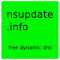
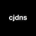
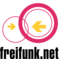

Routers
DNS
Recomendaciones Libres

nsupdate.info
A free dynamic DNS service. Use it to update an easy DNS name with your changing/hard-to-remember IP address. As we use the standard protoco…
Notas
Google Public DNS registra permanentemente tu ISP e información de localización para su análisis. Tu dirección ip-también es guardada por 24 horas.
OpenNIC no ha adoptado una política oficial en lo que respecta a privacidad de consultas a registros y anonimicidad. Más información aquí. (inglés)
Privativo*
Firmware
Recomendaciones Libres

Notas
libreCMC es un derivado de OpenWrt sin las partes propietarias, aprobado por el FSF. Si su dispositivo lo soporta libreCMC, usadlo mejor que OpenWrt.
Privativo*
Redes descentralizadas
Recomendaciones Libres


Cjdns
Cjdns is a networking protocol, a system of digital rules for message exchange between computers. "Instead of letting other computers connec…
Commotion
Usa teléfonos móviles, computadoras y enrutadores inalámbricos para crear redes en malla descentralizadas.

Enigmabox
Plug and play cjdns appliance, offering a distributed and end-to-end encrypted telephony and email service.

Freifunk
Iniciativa no comercial comunitaria para apoyar redes radiofónicas libres en todo el mundo.
Notas
Una mesh-networks es una red descentralizada de par a par, con enlaces físicos controlados por usuarios, usualmente inalámbricos.
“Las redes en malla (como topología) son un tipo de red donde cada nodo no solamente debe capturar y diseminar su propia información, sino también servir como relevo para otros nodos, es decir, debe colaborar para propagar la información en la red.“
—Wikipedia (en inglés)
Privativo*
Servidores VPN
Recomendaciones Libres
Privativo*